Advanced Agent¶
Click 【Create】, select 【Advanced Agent】, enter the agent name, and choose a template as needed; then click 【Create】 to enter the workflow orchestration page.
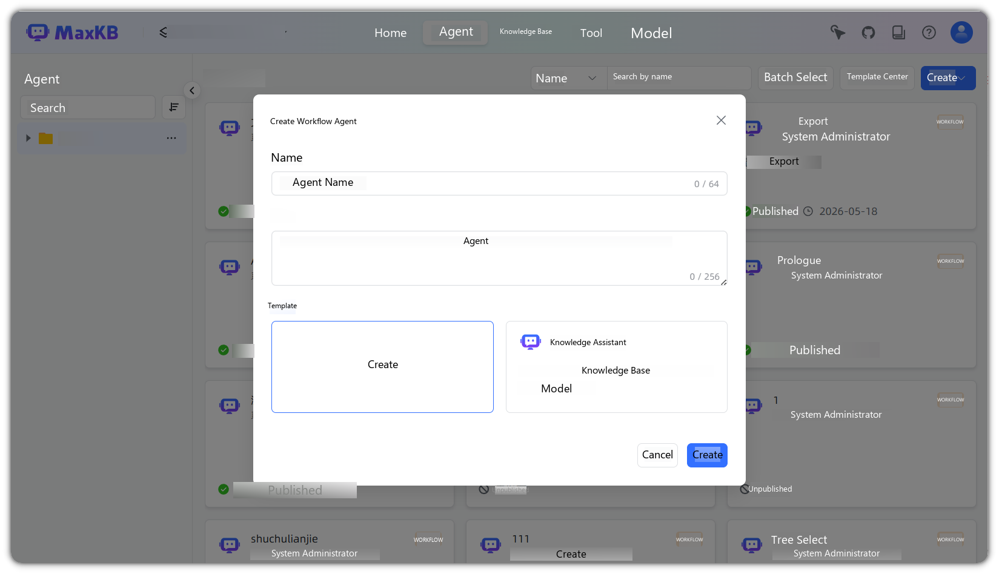
Advanced Agent uses a visual workflow to freely combine nodes such as AI models, knowledge bases, business logic, and external tools for debugging and publishing.
Note:
- Nodes on the canvas must be in the workflow; there cannot be isolated nodes outside the flow, otherwise validation will fail during publishing.
- Each node can be renamed according to its purpose; double-click a node name to rename it, but node names cannot be duplicated within the same workflow.
- The downstream node of a connection can reference the output parameters of the upstream node. If the node name changes, you need to re-copy the variable. The parameter reference syntax is
{{Node Name.Variable Name}}.
After completing the workflow design, use the canvas control bar in the lower-left corner to make overall adjustments to the canvas, including canvas zoom, node collapse, and one-click workflow optimization.
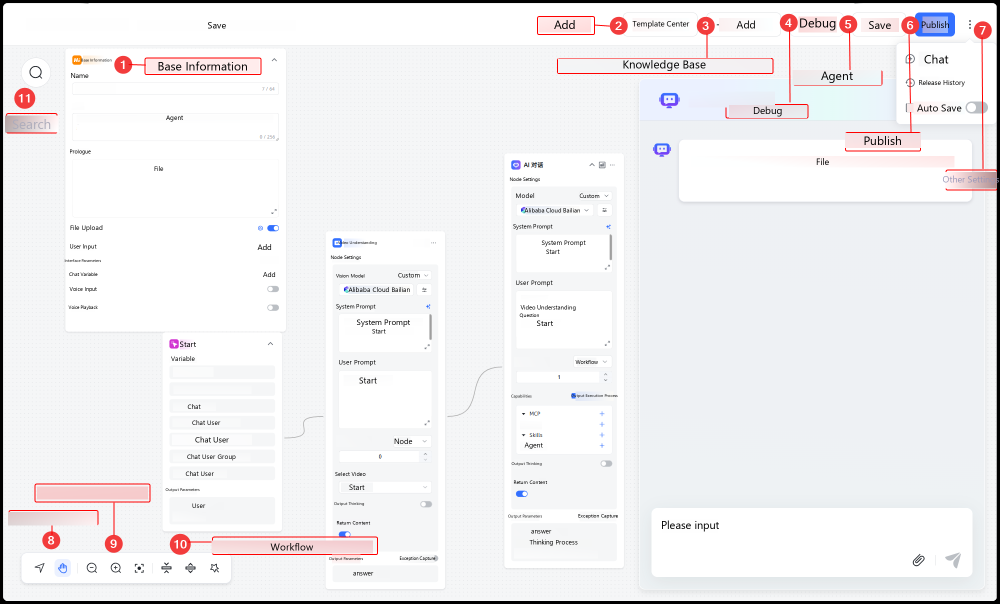
1 Basic Node¶
Each workflow consists of two basic nodes, 【Basic Information】 and 【Start】, and neither can be deleted or duplicated.
- Basic Information: used to configure the agent's basic data, including the agent name, agent description, opening remarks, and voice switch. Each agent has only one such node.
- Start: serves as the starting point of workflow execution; all subsequent nodes begin their flow from this node. Each agent has only one such node.
1.1 Basic Information¶
Node Description: The start node of the workflow, unique and the only one, which cannot be deleted or copied. The question entered on the Q&A page will be used as the output parameter {question} of this node. If subsequent nodes need to reference it, you can copy the output parameter or select a variable: Start Node->User Question.
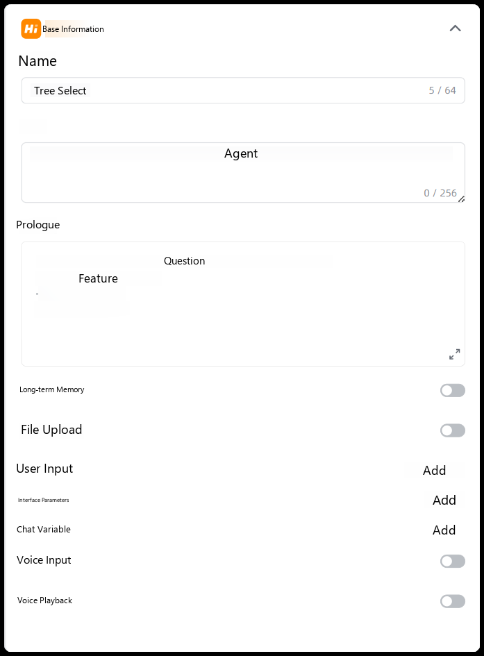
Long-term memory: After the long-term memory feature is enabled, the system automatically extracts key information such as the user's preferences, background, goals, and rule conventions from the conversation history, and persistently stores it in the database by user.
- Trigger mechanism: supports setting the memory generation to be triggered by conversation rounds or by time period.
- Usage: in subsequent conversations, administrators can inject the current user's memory content into the system prompt or chat context by referencing the {memory} variable, enabling the agent to continuously understand the user without asking again, effectively improving conversation coherence and the personalized experience.
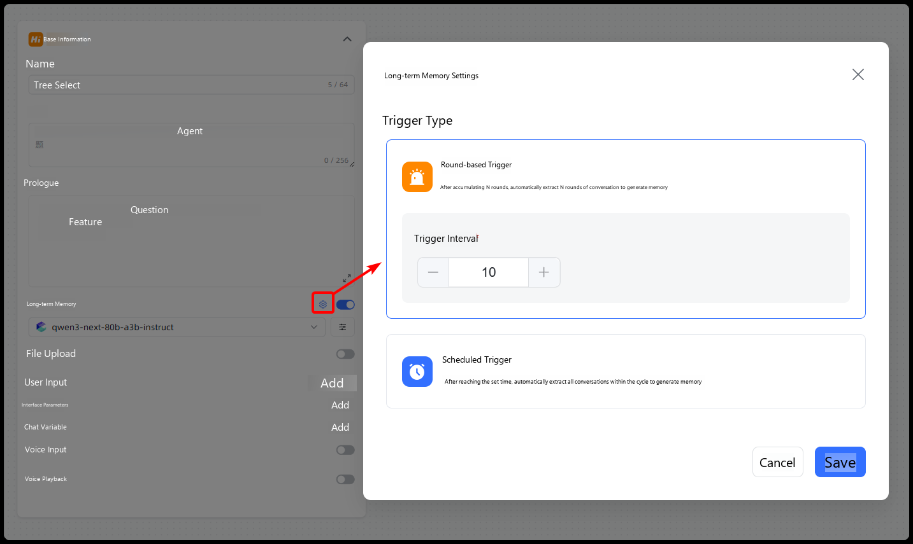
File upload: When enabled, the agent will support uploading documents during chat.
- Documents: TXT, MD, DOCX, HTML, CSV, XLSX, XLS, PDF;
- Images: JPG, JPEG, PNG, GIF;
- Audio: MP3, WAV, OGG, ACC, M4A;
- Video: MP4, AVI, MKV, MOV, FLV, WMV;
- Other Files: files with other custom extensions must be parsed manually.
Upload up to 10 files at a time, with each file no larger than 100 MB; the uploaded files can be processed in subsequent nodes. By default, 3 files are allowed, with each file no larger than 50 MB.
Upload methods: supports two upload methods: local file upload and URL upload.
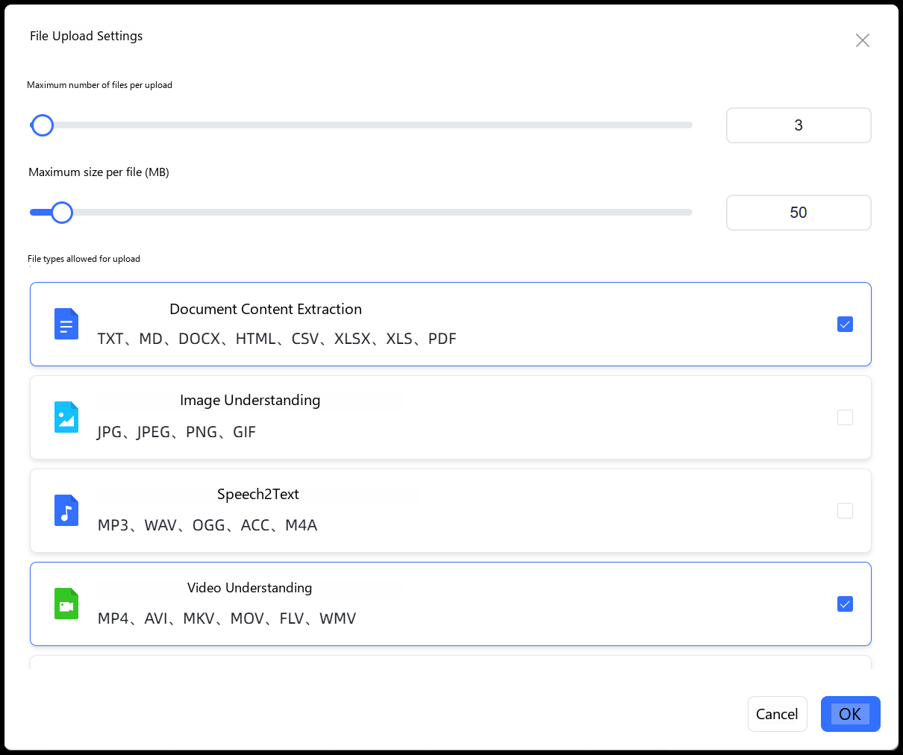
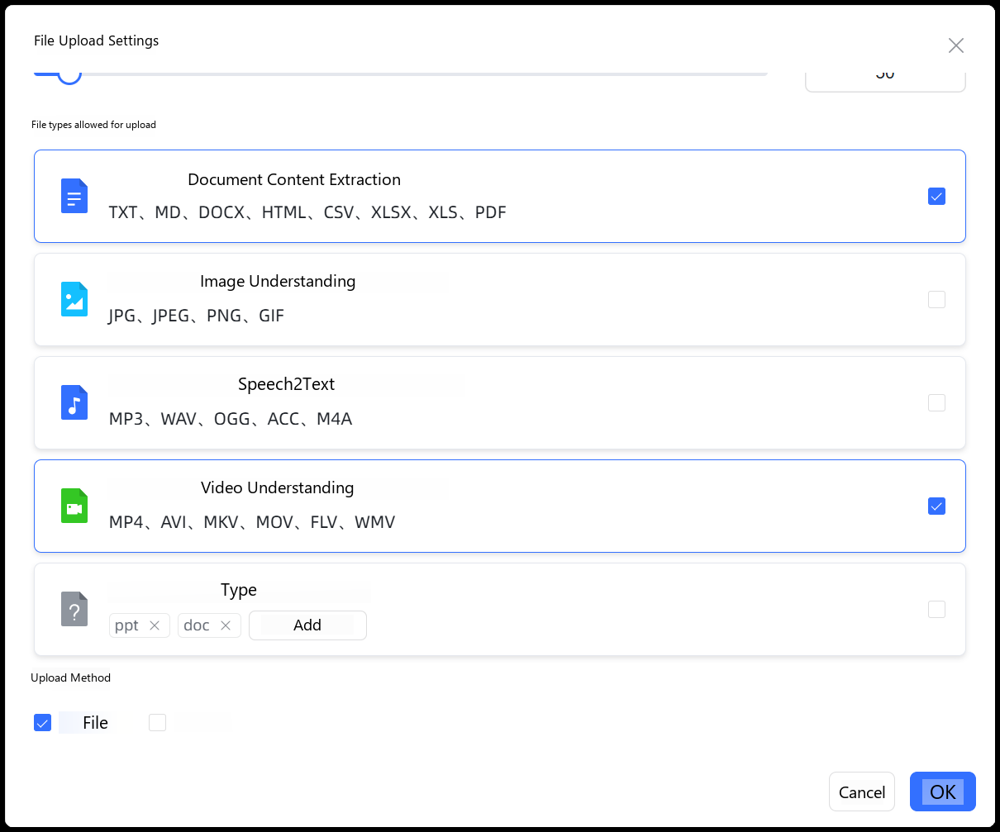
User Input: the necessary information that needs to be provided on the user side at the start of the session, such as job role, model, knowledge base, etc., so that subsequent flows can be designed differently based on different inputs.
- The component types for adding parameters to User Input support text box, password box, radio button, checkbox, tab, date, switch, single-row tab, multi-line text box, single-row multi-select card, model, knowledge base, and tree selector.
- Visibility Settings: a new tab specifically for configuring linkage rules. Display Condition: the current parameter is shown only when all / any of the conditions are met; otherwise it is hidden directly. Hide Condition: the current parameter is hidden directly when all / any of the conditions are met; otherwise it is shown normally.
- Each condition uses a fixed three-part dropdown:
【Variable Source】 → 【Operator】 → 【Match Value】
1. Selectable range of the Variable Source dropdown (strictly limited to avoid circular references):
Other user input parameters that are ordered before this parameter and have been fully configured
2. Full set of operators:
Equals / Not equals / Contains / Does not contain / Is true / Is not true / Greater than / Greater than or equal / Less than / Less than or equal
3. Cascading Match Value dropdown: If the source parameter is single-select / tree single-select / multi-select: the Match Value dropdown directly displays all configured option labels and option values of that parameter; If the source parameter is a text type: manual input of the matching content is supported, along with the variable reference syntax {{Parameter Name}}
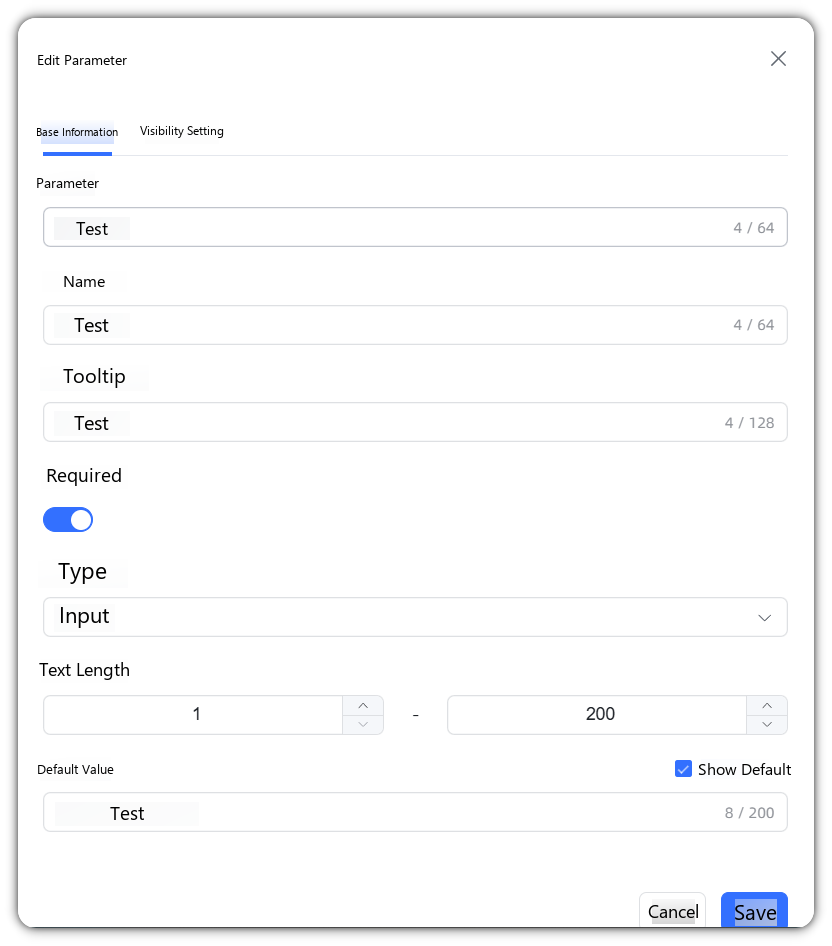
API parameters: parameters that can be configured when accessing the agent via a public access link. After adding API parameters, they will be automatically appended to the public access URL when integrating with third-party systems.
- Note: The token field is an internal field and cannot be added as a parameter.- Session variable: the variable remains valid throughout the current chat flow and is used for data transfer between nodes and logical judgment.
- Voice input: When enabled, questions can be input by voice, which requires a speech recognition model.
- Voice playback: When enabled, the answer content will be played as voice. You can use the browser's built-in playback, or use a speech synthesis model for playback.
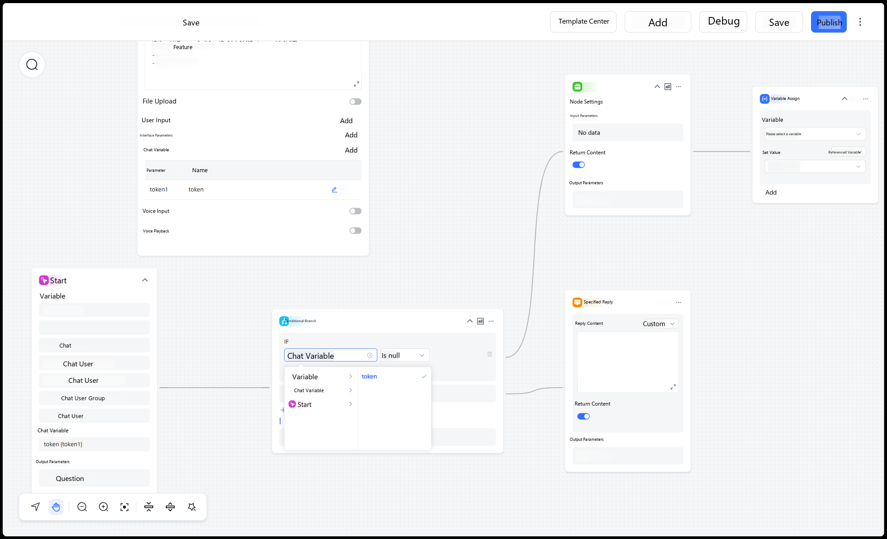
1.2 Getting Started¶
It serves as the starting point of workflow execution, and all subsequent nodes flow from this node.
Global Variables:
- Current time {time}: the time of the current conversation.
- Conversation History {history_context}: the chat history of the conversation.
- Chat ID {chat_id}: the conversation identifier.
- Chat User ID {chat_user_id}: the chat user identifier.
- Chat User Type {chat_user_type}: the chat user type.
- Chat User Group {chat_user_group}: the chat user group.
- Chat User {chat_user}: the default chat user is a guest. Based on the chat user name, further logical decisions can also be made in the workflow.
Session Variable:
- Session variable name {session variable parameter}: the session variable created in Basic Information.
Parameter Output:
- User Question {question}: the question information entered by the client. Other parameter outputs: if file upload is enabled, the output parameters may also include:
- Document {document}: The document file uploaded by the client.
- Image{image}: the image file uploaded by the client.
- Audio {audio}: The audio file uploaded by the client.
- Video{video}: the video file uploaded by the client.
- Other Files {other}: other files uploaded by the client.
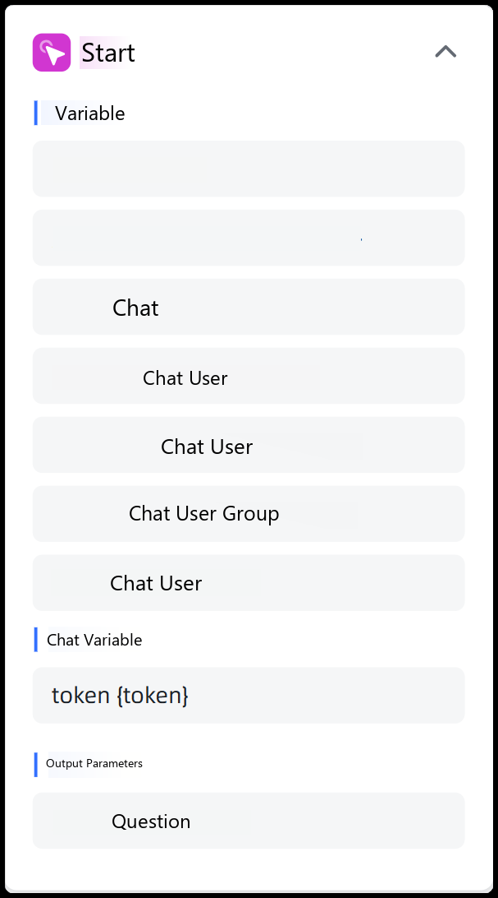
Click 【Add Component】 in the upper right corner of the canvas to add the required nodes to the workflow by clicking or dragging. Components are divided into three major categories by function, described as follows:
- Basic: Covers AI capabilities, knowledge bases, business logic, etc.
- Tool: Handles complex requirements flexibly through functions.
- Agent: One-click import of other published agents as sub-flows, directly reusing their Q&A results to achieve rapid assembly and capability reuse.
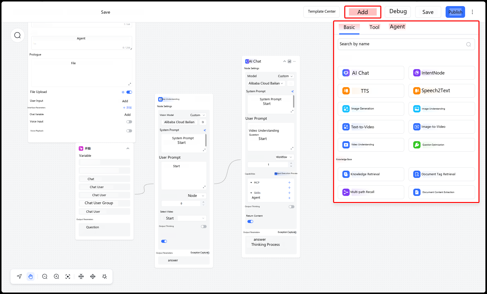
2 Basic Components¶
2.1 AI Capabilities¶
2.1.1 AI Chat¶
Node Description: If the Agent needs to chat with an AI model, an AI Chat component needs to be added to the orchestration.
Node Settings:
- AI Model: supports referencing a variable or selecting a custom model; the referenced variable source is the model parameter added in the user input.
- System Prompt: the role or identity setting for the large model's responses.
- User Prompt: a detailed description that guides the model to generate specific output. The prompt can reference the parameter output of preceding nodes, such as the retrieval result of a preceding knowledge base retrieval and the question variable of the Start Node.
-
Conversation History: the content of historical sessions related to the current conversation. For example, if Conversation History is set to 1, the current question and the content of the previous conversation are sent to the LLM together.
- Select node: Uses the prompt information of the current AI chat node and the content returned by the node as context.
- Select workflow: Uses the user's question entered in the dialog and the content of the final reply as context.
-
Vision: The AI Chat node of the Advanced Agent fully supports multimodal input. During the conversation, users can simultaneously input text, images, and other forms of content, and the model will integrate the multimodal information for understanding and answering.
- Default state: the feature is disabled; the node runs only on pure-text LLM logic, with no multimodal parsing capability;
- When enabled: images and videos can be uploaded in the conversation, and the node switches to multimodal model execution logic.
- Note: If the vision feature is enabled but the selected model does not support multimodal capabilities, an error will be triggered when the workflow runs. Please make sure to use a multimodal large model.
-
Skills: agents support automatically calling MCP, tools, Skills, and other agents, and you can choose whether to output the execution process of the skill.
- MCP: supports adding multiple MCPs. MCPs can be invoked in two ways: by referencing an MCP or by configuring a custom MCP Server Config. The large language model will proactively call the appropriate tool based on the prompt content.
- Tool: Custom tools can be flexibly selected based on actual scenarios. The system automatically encapsulates tool capabilities as MCP services and connects them to models, allowing AI to intelligently determine whether to call tools based on the conversation context.
- Skills: supports autonomously analyzing the need and matching the appropriate Skill based on the user's question intent, automatically triggering Skill execution.
- Agent: you can add other agents to directly and quickly call the Q&A results of a sub-agent.
-
Output reasoning: Settings for enabling the model's reasoning feedback. The default start and end tags are
<think>and</think>. - Return content: Whether to display the content returned by this node in the conversation.
Parameter Output: you can choose whether to display the exception capture parameter.
- Answer content {answer}: the content returned by the large language model based on the role, prompt, and other settings.
- Thinking process {reasoning_content}: the thinking process of the AI model.
- Conversation History {history_message}: outputs the corresponding conversation history according to the configured number of history messages.
- Exception message {exception_message}: supports configuring a dedicated execution flow for exception branches, such as automatic retries or falling back to default values.
Note: Calling MCP tools requires the large language model to support function calling; if it does not, the configuration is invalid.
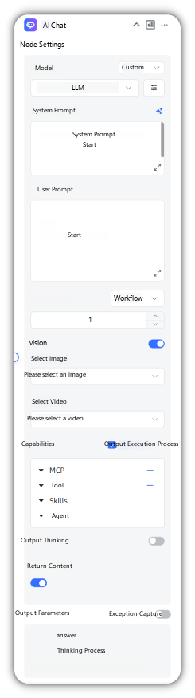
The prompt is a context instruction injected at the start of each conversation, used to establish prerequisite rules such as the model's identity, tone, knowledge boundary, and output format, thereby ensuring accurate, consistent, and controllable responses.
- Supported Variables: for example, {data} automatically inserts knowledge base segments, and {question} references the user's question, enabling accurate, controllable, low-hallucination intelligent replies.
The AI Chat Node can automatically generate high-quality, well-structured system prompts based on the topic content of the user's input, helping users quickly build prompt text suitable for the current scenario. By properly orchestrating prompts, administrators can quickly switch among multiple scenarios and roles without changing the model, significantly reducing the risk of LLM hallucination and improving the user experience.
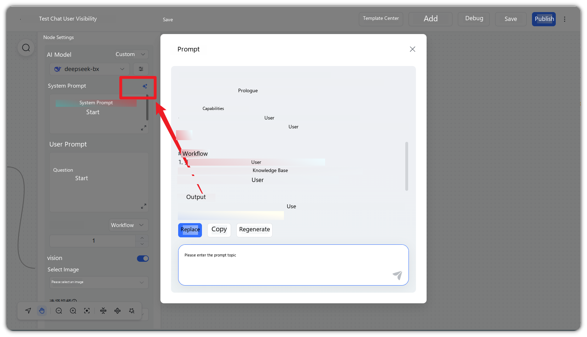
MCP: reference an MCP and a custom MCP Server Config.
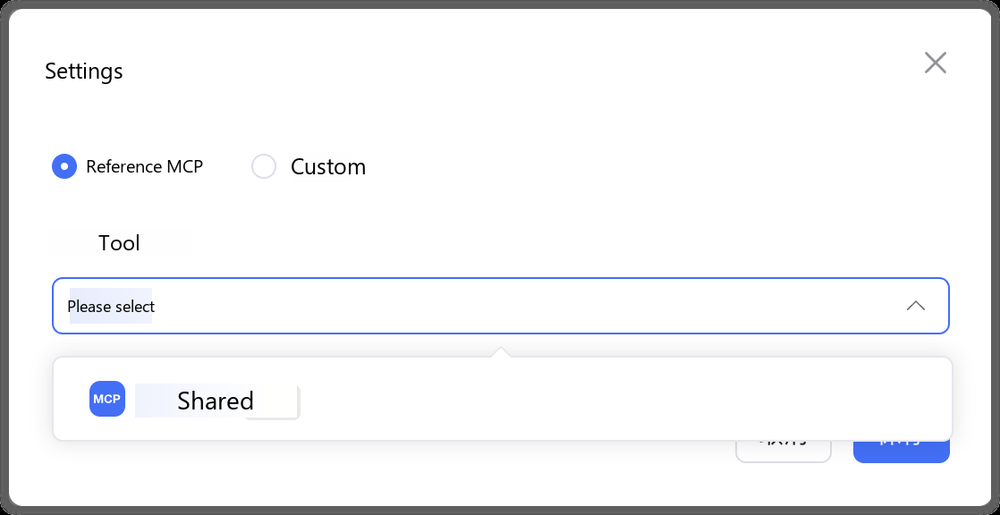
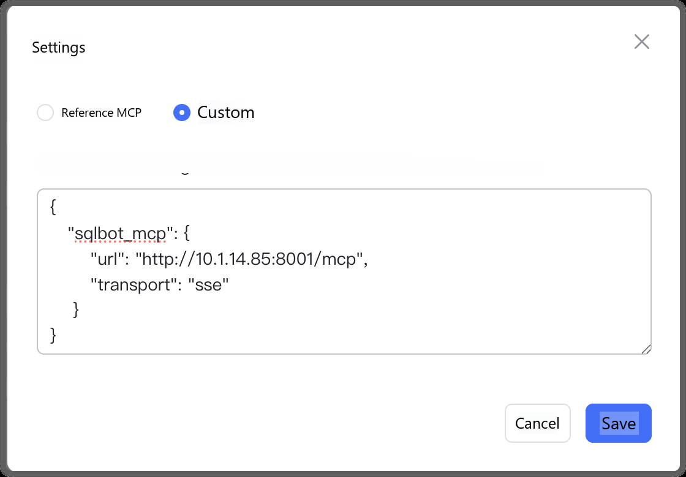
Tool: Supports adding tools that have been enabled under Tool.
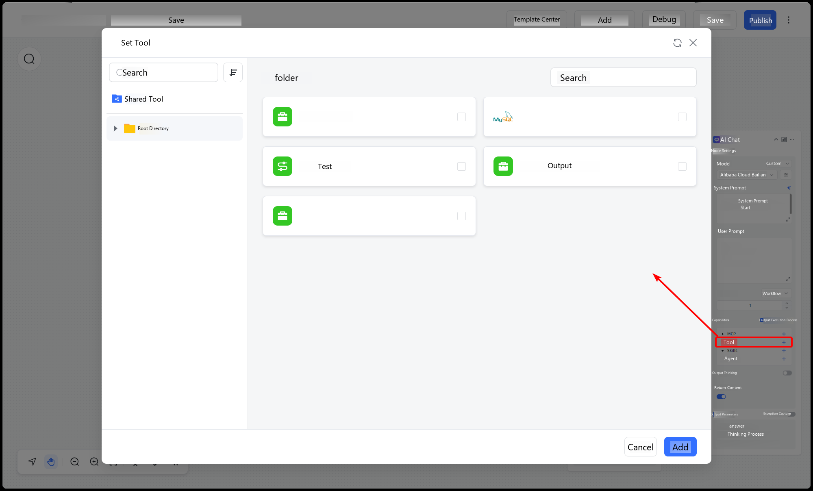
Skills: supports adding Skills that have been enabled in [Tools].
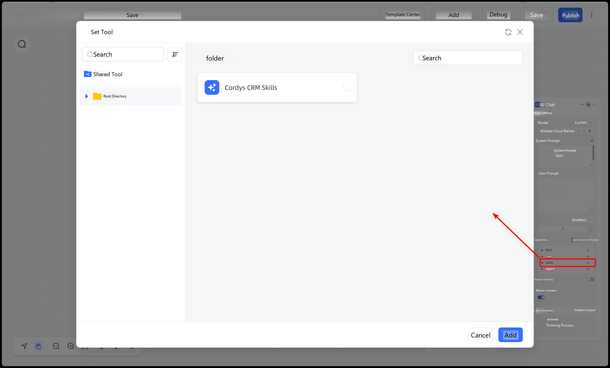
Agent: supports adding other already created agents.
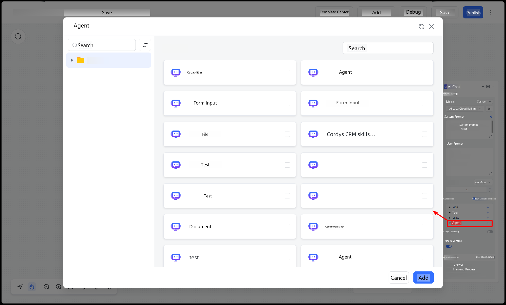
2.1.2 Intent Recognition¶
Node Description: Classify and recognize the intent based on the input.
Node Settings:
- AI Model: the name and parameter controls of the large language model.
- Input: The content to be used for intent recognition.
- Conversation History: the content of historical sessions related to the current conversation. For example, if Conversation History is set to 1, the current question and the content of the previous conversation are sent to the LLM together.
- Intent category: the name of each intent category.
Parameter Output:
- Category {category}: the category name returned based on the type of intent classification.
- Reason {reason}: the reason for judging the intent classification.
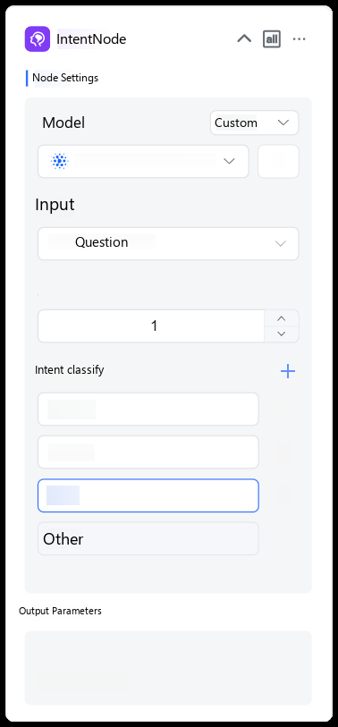
2.1.3 Text-to-Speech¶
Node Description: Convert text to audio.
Node Settings:
- Speech Synthesis Model: select the name of an available speech synthesis model.
- Text content: Select the text content to be synthesized.
- Return content: Whether to display the content returned by this node in the conversation.
Parameter Output:
- Result {result}: the audio content converted from the text.
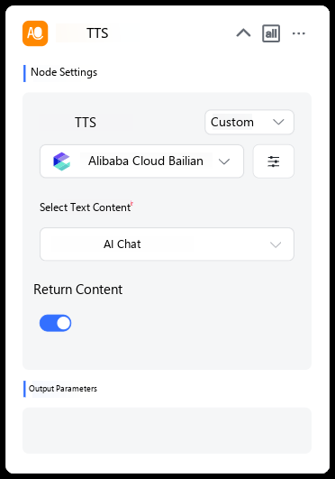
2.1.4 Speech-to-Text¶
Node Description: Convert audio files to text.
Node Settings:
- Speech Recognition Model: select the name of a speech recognition model.
- Voice file: the uploaded audio file. Supported formats include: mp3, wav, ogg, acc.
- Return content: Whether to display the content returned by this node in the conversation.
Parameter Output:
- Result {result}: the text content after speech conversion.
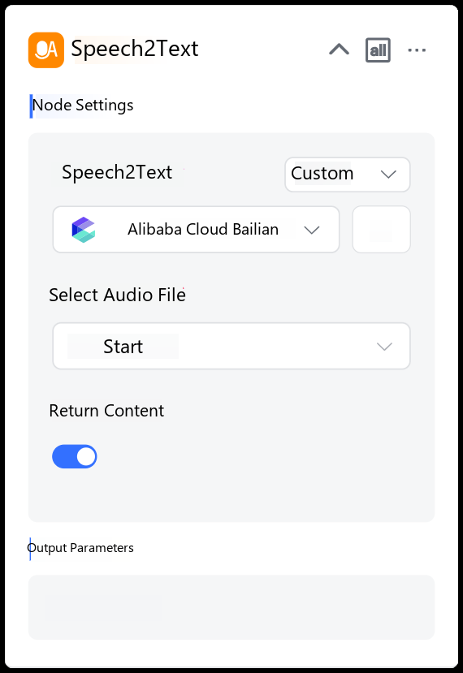
2.1.5 Image Generation¶
Node Description: Generate the corresponding image based on the text description.
Node Settings:
- Image generation model: the name of the image generation model.
- Prompt (positive): Text input that guides the model to generate positive, constructive output.
- Prompt (negative): A description of the elements, topics, or features that should not be included in the generated output.
- Return content: Whether to display the content returned by this node in the conversation.
Parameter Output:
- AI Answer Content {answer}: the image generated by the image generation model based on the text input.
- Image {image}: detailed information about the generated image.
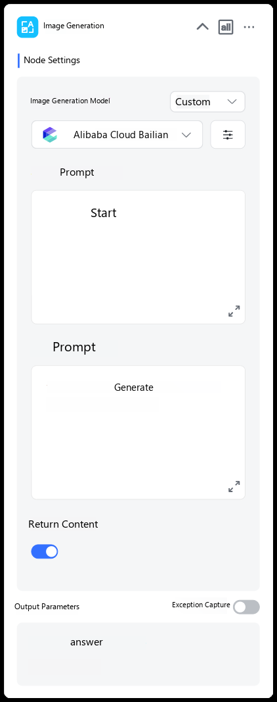
2.1.6 Image Understanding¶
Node Description: Analyze and understand image files uploaded by the user.
Node Settings:
- Image understanding model: the name of the image understanding model.
- Role Setting: the role or identity setting for the response.
- Prompt: A detailed description that guides the model to generate specific output.
-
Conversation history: historical session content related to the current conversation.
- Select node: Uses the prompt information of the current image understanding node and the content returned by the node as context.
- Select workflow: Uses the user's question entered in the dialog and the content of the final reply as context.
-
Select image: The image to be understood and analyzed. You can select a user-uploaded image file or a URL address.
- Return content: Whether to display the content returned by this node in the conversation.
Parameter Output:
- AI Answer Content {answer}: the content returned by the image understanding model based on the uploaded image and information such as the role and prompt.
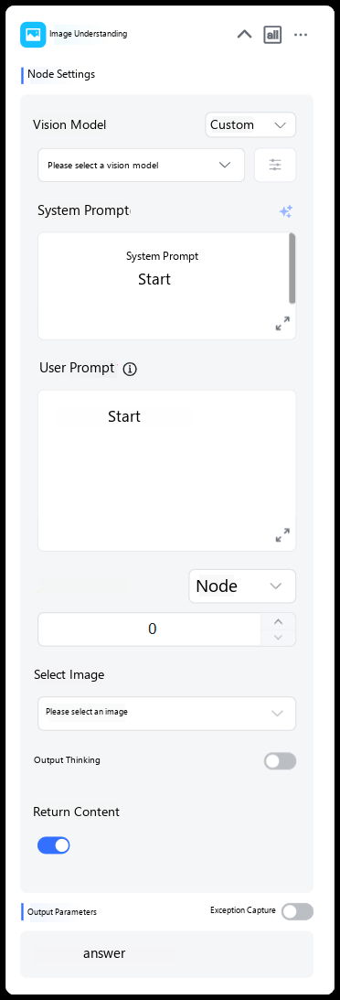
2.1.7 Text-to-Video¶
Node Description: Generate the corresponding video based on the text description.
Node Settings:
- Text-to-Video Model: select the name of the text-to-video model.
- Prompt (positive): Text input that guides the model to generate positive, constructive output.
- Prompt (negative): A description of the elements, topics, or features that should not be included in the generated output.
- Return content: Whether to display the content returned by this node in the conversation.
Parameter Output:
- Video {video}: the video content generated from the text.
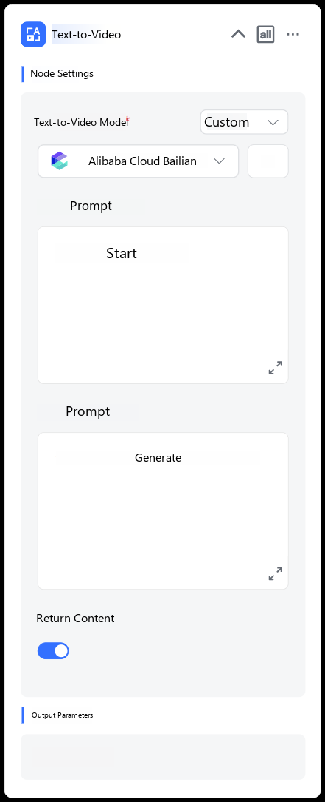
2.1.8 Image-to-Video¶
Node Description: Generate the corresponding video based on the image.
Node Settings:
- Image-to-video model: select the name of the image-to-video model.
- Prompt (positive): Text input that guides the model to generate positive, constructive output.
- Prompt (negative): A description of the elements, topics, or features that should not be included in the generated output.
- First Frame Image: required, the image from which the video will be generated. You can choose a user-uploaded image file or a URL address.
- End frame image: optional. The image used as the end frame of an image-to-video, which can standardize the generation of the video.
- Return content: Whether to display the content returned by this node in the conversation.
Parameter Output:
- Video {video}: the video content generated from the image.
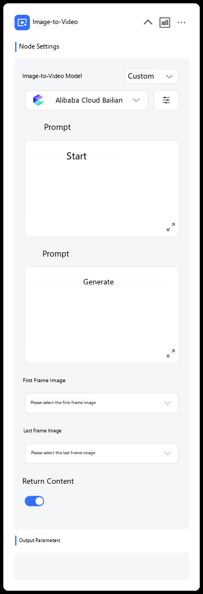
2.1.9 Video Understanding¶
Node Description: Analyze and understand video files uploaded by the user.
Node Settings:
- Vision Model: the name of the vision model.
- System Prompt: the role or identity setting for the large model's responses.
- User Prompt: a detailed description that guides the model to generate specific output. The prompt can reference the parameter output of preceding nodes, such as the retrieval result of a preceding knowledge base retrieval and the question variable of the Start Node.
-
Conversation history: historical session content related to the current conversation.
- Select node: Uses the prompt information of the current video understanding node and the content returned by the node as context.
- Select workflow: Uses the user's question entered in the dialog and the content of the final reply as context.
-
Select video: The video to be understood and analyzed. You can select a user-uploaded video file or a URL address.
- Return content: Whether to display the content returned by this node in the conversation.
Parameter Output:
- AI Answer Content {answer}: the content returned by the vision model based on the uploaded video and information such as the role and prompt.
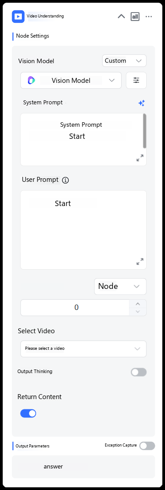
2.1.10 Question Optimization¶
Node Description: Intelligently optimize the current question based on the conversation history of the current session, as well as the large language model and prompt set in the node settings.
Node Settings:
- AI Model: the name and parameter controls of the large language model.
- Role Setting: the role or identity setting used by the large language model for responses.
- Prompt: A detailed description that guides the model to generate specific output.
- Conversation History: the content of historical sessions related to the current conversation. For example, if Conversation History is set to 1, the current question and the content of the previous conversation are sent to the LLM together.
- Return content: Whether to display the content returned by this node in the conversation.
Parameter Output:
- Question optimization result {answer}: The question optimized by the large model.
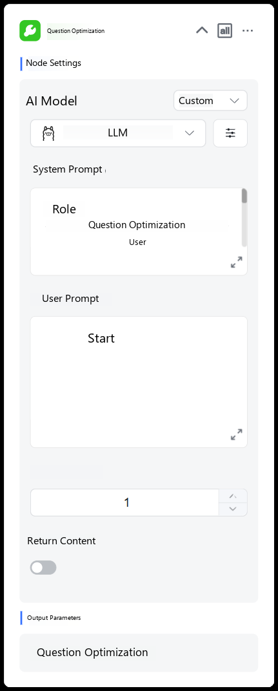
2.2 Knowledge Base¶
2.2.1 Knowledge Base Retrieval¶
Node Description: If the Agent needs to be linked to a knowledge base, a Knowledge Base Retrieval node needs to be added to the orchestration, and then select the knowledge base, set the retrieval parameters, and select the question to retrieve.
Node Settings:
- Retrieval scope: the scope of the knowledge base or list of knowledge bases to be retrieved.
- Manual: add an associated knowledge base.
- Reference variable: select an existing "Knowledge Base List" or "Document List" variable in the workflow.
- Retrieval parameters: include the retrieval mode, similarity threshold, the number of cited segments, and the maximum cited characters.
- Retrieval question: generally the user question from the Start Node.
- Show results in knowledge sources: off by default; when enabled, the knowledge source can be shown in the answer results.
Parameter Output:
- The segment list of the retrieval result {paragraph_list}: an array type that refers to the list of segments hit after retrieving according to the retrieval question and retrieval parameters, containing all attributes of the segments;
- Segment list that satisfies direct answers {is_hit_handling_method_list}: array type, referring to the list of all segments that satisfy direct answers among the segments hit after retrieval based on the query question and retrieval parameters, including all attributes of the segments;
- Retrieval result {data}: a string type that refers to the segment content hit after retrieving according to the retrieval question and retrieval parameters;
- Segment content that satisfies direct answers {directly_return}: string type, referring to all segment content that satisfies direct answers among the segments hit after retrieval based on the query question and retrieval parameters.
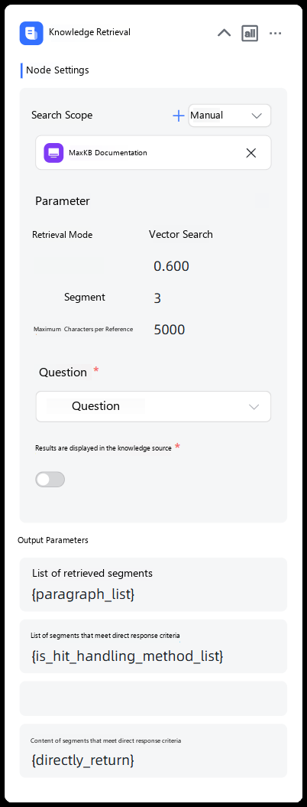
2.2.2 Document Tag Retrieval¶
Node Description: Retrieve documents that meet the criteria based on the configured document tag filter conditions.
Node Settings:
- Retrieval scope: the scope of the knowledge base or list of knowledge bases to be retrieved.
- Manual: add an associated knowledge base.
- Reference variable: select an existing "Knowledge Base List" or "Document List" variable in the workflow.
- Retrieval Settings:
- Automatic: When a retrieval question is selected, the system automatically matches document tags based on the question.
- Manual: add tag conditions as filters; you need to add the corresponding tag content.
Parameter Output:
- Knowledge Base List {knowledge_list}: array type, refers to the list of knowledge bases that match the tag condition.
- Document List {document_list}: An array type referring to the list of documents matching the tag condition.
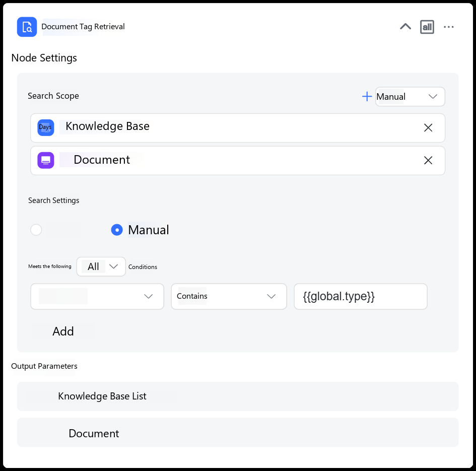
This node works with the [Knowledge Base Retrieval] node to retrieve segmented content, further narrowing the retrieval scope and making the retrieval results more accurate.
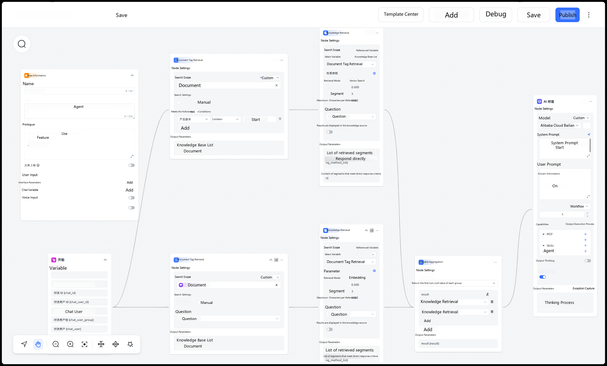
2.2.3 Multi-Path Recall¶
Node Description: Perform multi-path recall based on the content to be reranked, the retrieval question, and the retrieval parameters.
Node Settings:
- Rerank content: The multiple pieces of content to be reranked, generally the retrieval results from several different knowledge bases.
- Retrieval parameters: include the score threshold, the number of cited segments, and the maximum cited characters.
- Retrieval question: rerank according to the retrieval question, generally the user question or the result after question optimization.
- Rerank model: The name of the rerank model to use.
Parameter Output:
- Rerank result list {result_list}: Array type, referring to the list of reranked results.
- Rerank result {result}: String type, referring to the rerank result based on the retrieval parameters.
- Segment list that satisfies direct answers {is_hit_handling_method_list}: array type, referring to the retrieval list based on the retrieval parameters.
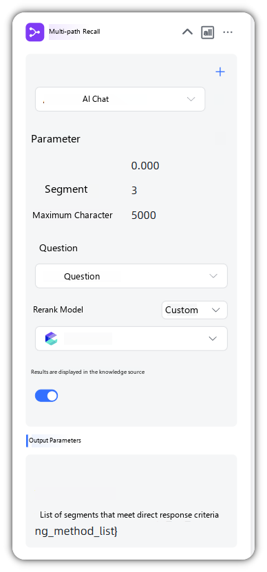
2.3 Business Logic¶
2.3.1 Judger¶
Node Description: Perform logical judgment based on different conditions. Each branch must have a subsequent execution node.
Judger Node output parameter description:
- Branch name{branch_name}: the name of each judgment branch.
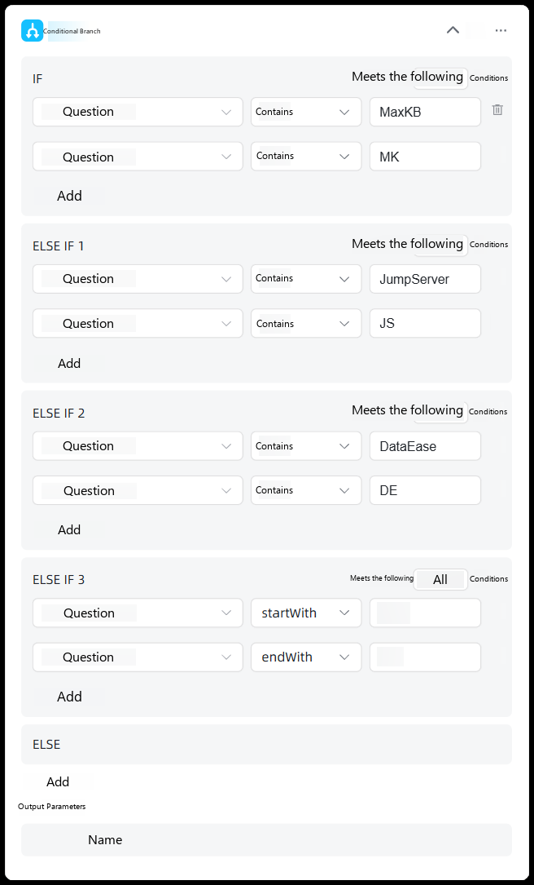
2.3.2 Form Collection¶
Node Description: Actively obtain necessary information in a guided way through form design, suitable for scenarios where the Agent needs to ask multiple questions.
Node Settings:
- Form output content: the form prompt description and the form content. You can input a single item or multiple items of information.
- Form Configuration: design the form by adding different components.
Parameter Output:
- All form content {form_data}: all the content of the form.
All form content will be output as a fixed output, and each form item is also output as a parameter.
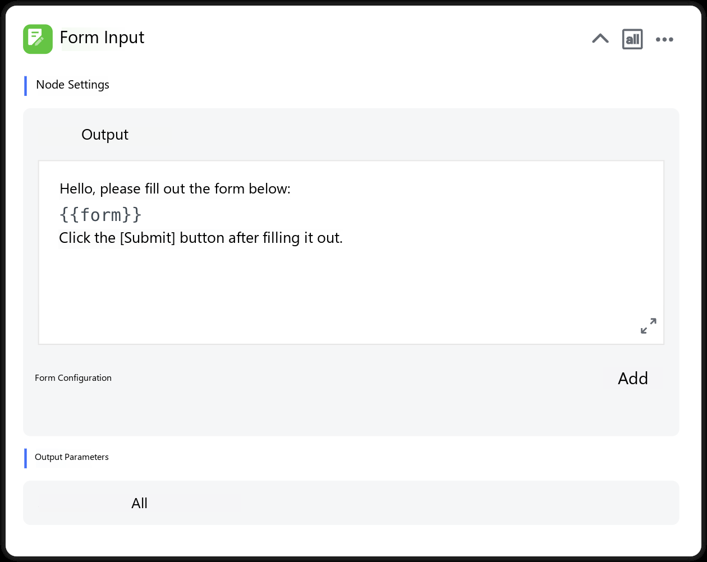
The component types for adding form parameters include single-line text box, multi-line text box, JSON text box, password box, radio button, checkbox, tab, single-line tab, single-line multi-select card, slider, switch, date, file upload, model, knowledge base, and tree selector.
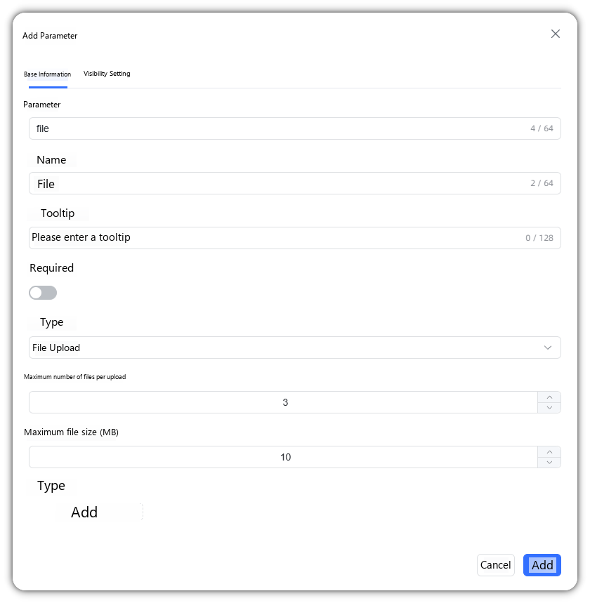
Form parameters support referencing variables or parameter input:
- When the component type is [Radio, Checkbox, Tabs, Single-line Tabs, Single-line Multi-select, JSON Text Box], the assignment method can be set to Custom or Reference Variable; the default is Custom. For the format of referencing a variable, refer to the tooltip next to [Reference Variable].
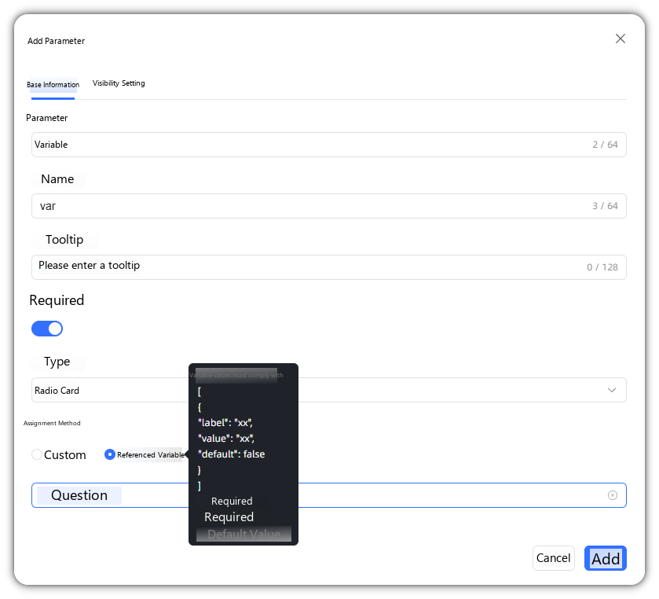
- The default values of the 【Text Box, Multi-line Text Box, Password Box】 components support parameter input. For the parameter format, refer to: {{开始.question}}
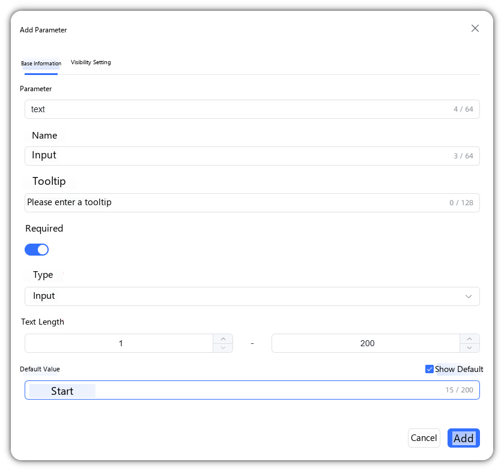
- 【Show/Hide Settings】You can dynamically control whether the current parameter is displayed or hidden based on the values of input parameters earlier in this form, global/session variables, and output variables of preceding nodes.
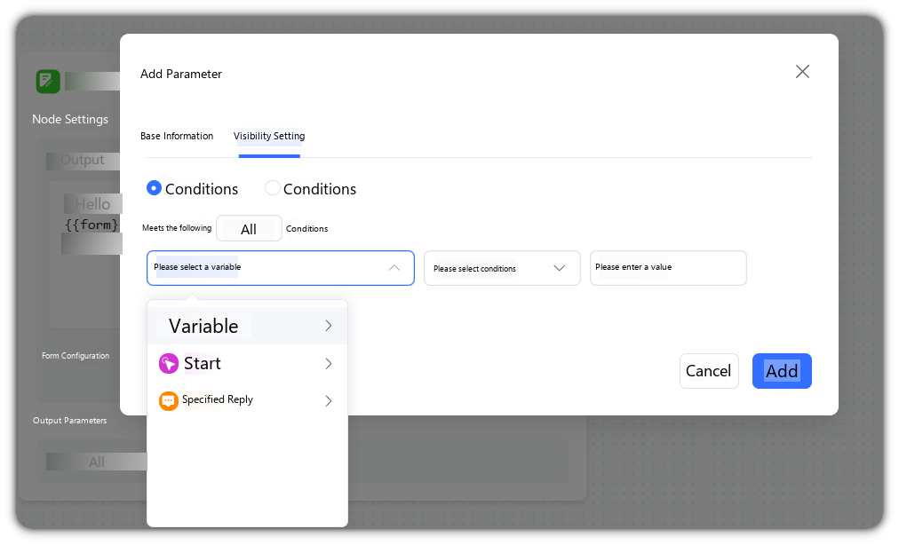
2.3.3 Specified Reply¶
Node Description: Specify the output text content. When the relevant content retrieved from the knowledge base meets the requirements for a direct answer, the retrieved content can be output; when no related content is retrieved from the knowledge base, a reply content can be specified.
Output parameters:
- Content{answer}: specifies the content of the reply output.
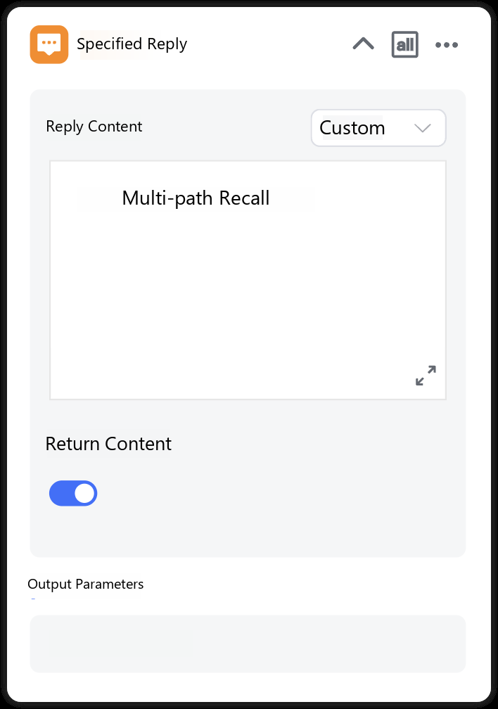
2.3.4 Loop Node¶
Node Description: Repeatedly execute a task sequence until specific conditions are met, by setting the loop type and loop body. After adding a loop node, a loop node and its corresponding loop body canvas are generated.
Loop type: the loop type is the running mode of the loop node, supporting Array Loop, Fixed-Count Loop, and Infinite Loop.
- Array loop: A data-driven loop based on arrays, supports traversing each element in the array to execute tasks in sequence, suitable for scenarios of batch processing by data volume;
- Loop array: select the array content to iterate over.
- Fixed-Count Loop: the loop runs a preset fixed number of times. Users can directly set the specific number of times a task repeats (e.g., 5 or 10 iterations), which meets the requirement of "repeated operations with a specific count".
- Loop count: sets the number of iterations; if it is less than 1, it is set to 1.
- Infinite Loop: there is no fixed termination condition. The task keeps repeating until the stop condition is met. By default, the maximum number of loops is 500. It is suitable for scenarios that "require long-term running and waiting for a specific event to be triggered."
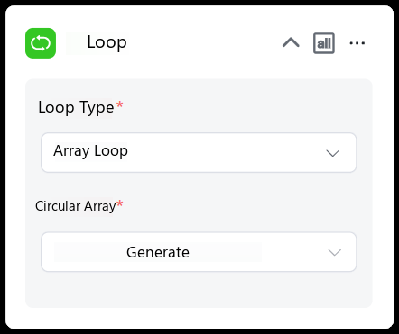
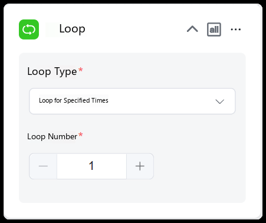
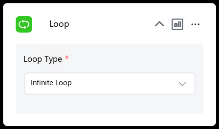
Output parameters: The loop variable set in [Loop Start] within the loop body can serve as the output parameter of the loop node for use by each workflow node.
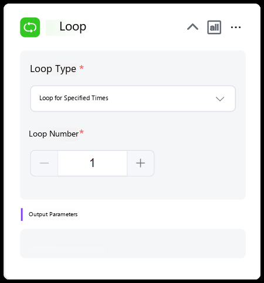
Loop body: the loop body canvas is used to orchestrate the loop logic. On each iteration, the workflow executes the workflow in the loop body canvas.
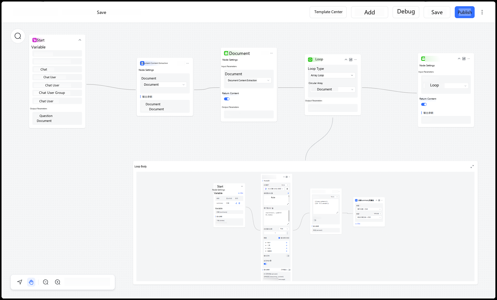
Loop Start: Acts as the starting point of loop execution; all subsequent nodes in the loop body start flowing from this node.
Node Settings:
- Loop variable: loop variables can be set in the loop body and apply to each iteration. Loop variables are usually used together with variable assignment: after each iteration, a new value is set for an intermediate variable, and the new value is used in the next iteration. The loop variable can be used as an output parameter of the loop node and be called by nodes in the workflow outside the loop body.
Loop variable: the loop variable added in [Node Settings] can be referenced in the loop body.
Output parameters:
- Subscript {index}: the position of the element in the array. Indexing starts at 0, meaning the first loop; 1 means the second loop; 2 means the third loop; and so on. The index of the last loop is n-1, where n is the number of loops.
-
Loop item {item}: a single piece of data in the array. An array consists of multiple items, and each item can be a data type such as a number, character, or string.
For example, in the array array=[23,26,37,88,90], the index of array[0] is 0 and the item is 23; the index of array[4] is 4 and the item is 90.
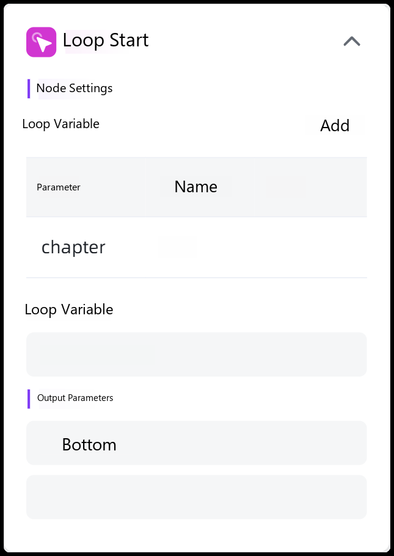
Continue: Used to terminate the current loop and execute the next loop.
Add Condition: Add a condition to terminate the current loop; when the condition is met, terminate the current loop and proceed to the next loop.
Note: Continue cannot be used as the End Node.
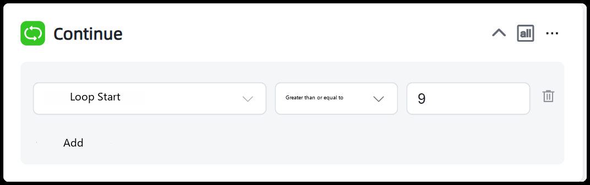
Break: Terminates the current loop and exits the loop body.
Add Condition: Add a condition to terminate the current loop; when the condition is met, terminate the current loop, break out of the loop body, and continue the workflow.
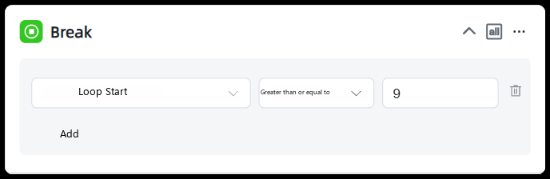
Note:
- Loop nodes cannot be added inside the loop body, to avoid infinite loops;
- When the loop type is Infinite Loop, the default maximum is 1000 iterations. To modify the configuration parameter, you need to edit the ${MAXKB_BASE}/maxkb/.env file (default: /opt/maxkb/.env), and after making the changes, run the
mkctl reloadcommand to reload the configuration file.
2.4 Data Processing¶
2.4.1 Variable Assignment¶
Node Description: Update the value of a global variable.
Variable: the target global variable to be assigned.
Assignment: Content for assigning values to variables. You can reference variables, customize, or set the value to empty.
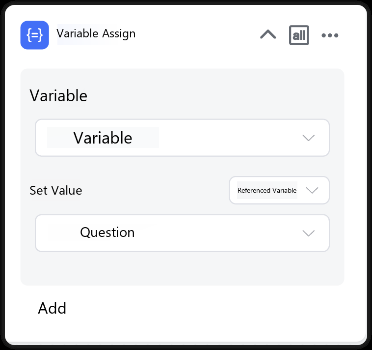
2.4.2 Variable Aggregation¶
Node Description: Integrate multiple variables into one parameter for output.
Node Settings:
- Aggregation strategy:
- Return the first non-empty value of each group: Take the first non-empty item of each group as the group result and discard the rest.
- Return an array (Array) of each group of variables: Assemble all variables in the same group by field name and output the complete structure.
- Return a dictionary (Dict) of each group of variables: Assemble all variables in the same group as a dictionary type. You need to enter the Key value.
- Group: add variables that need to be aggregated into the same parameter. The group name can be modified, and multiple groups can be added.
Output parameters:
- Display Name {Variable}: the aggregated parameter name, updated with the aggregated variable.
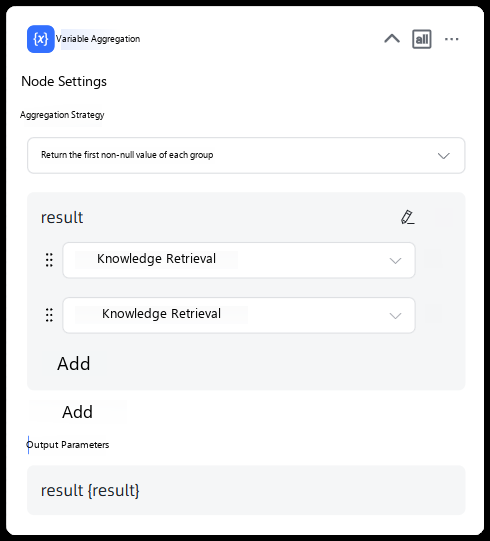
The main function of variable aggregation is to combine multiple variables into a single parameter for output, reducing the complexity of variable passing in the workflow.
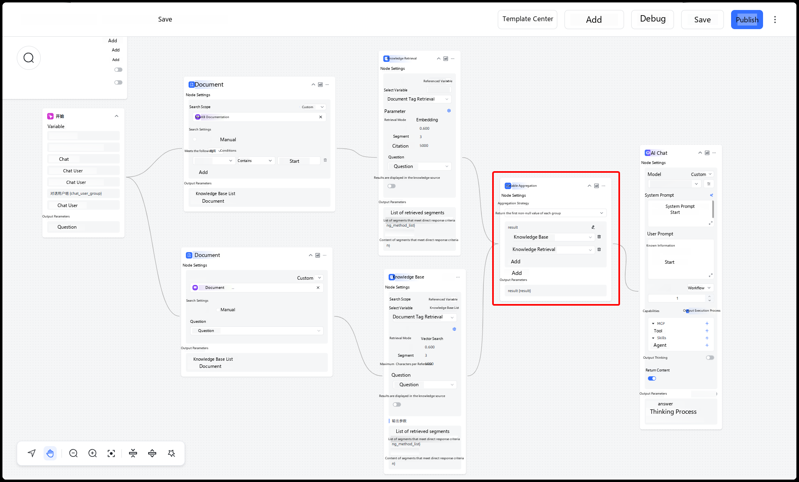
2.4.3 Variable Split¶
Node Description: Use JSON Path expressions to split the input JSON variable into multiple independent variables at once.
Node Settings:
- Input variable: Select the JSON variable in the workflow to be split.
- Split variables: set the variable name, display name, and JSON Path expression after splitting. Reference format of the JSON Path expression:
$.store.book.
Output parameters:
- Result{result}: outputs the content of all split variables.
- Display Name {Split Variable}: the content of a single split variable, updated with the split variable.
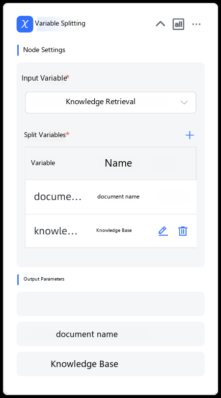
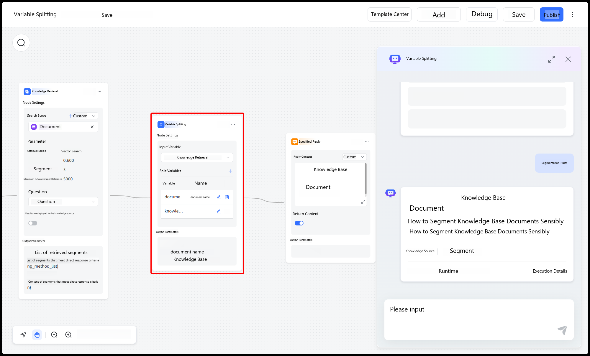
2.4.4 Parameter Extraction¶
Node Description: Extract structured parameters from unstructured or semi-structured text.
Node Settings:
- AI Model: a large language model used to extract structured parameters.
- Input variable: Structured text or unstructured text.
- Extraction parameter: Set the extraction parameter, display name, parameter type, and description.
Output parameters:
- Result{result}: outputs the content of all extracted parameters.
- Extraction Parameter {parameter name}: The content of a single extraction parameter, updated as the extraction parameter changes.
Parameter extraction mainly uses AI models to extract structured parameters from unstructured or semi-structured text. For example, when processing contract documents, you can use it to automatically extract key parameters such as "signing date", "contract amount", and "service content".
2.5 Others¶
2.5.1 MCP Call¶
Node Description: Call tools in the MCP service via the SSE/Streamable_HTTP protocol.
Node Settings:
- MCP Server Config: supports referencing an MCP and also supports custom MCP services (fill in the MCP Server configuration parameters in JSON format).
- Tool: the tool list under the corresponding MCP Server.
Tool Parameters: the request parameters corresponding to the MCP tool, which can be customized or reference variables.
Parameter Output:
- Result {result}: the result returned by the MCP tool execution.
MCP Server Config format, for reference, is as follows
{
"amap-maps": {
"url": "http://IP:port/MCPserverName",
"transport":"sse" # If using the Streamable_HTTP protocol, replace "sse" with "streamable_http"
}
}2.5.2 Document Content Extraction¶
Node Description: Summarize the content of documents uploaded by the user.
Node Settings:
- Select document: This is the user-uploaded document. You need to enable file upload support in the Basic Information node.
Parameter Output:
- Document Output {content}: a summary output of the user-uploaded file.
2.5.3 Custom Tools¶
In the advanced orchestration workflow, you can write Python code and add parameters to create a tool as a processing node in the workflow to flexibly handle complex requirements. Custom tools are created the same way as tools; for detailed instructions, see: Tool.
2.6 Tools¶
In the advanced orchestration workflow, you can add tools from Tool as component nodes to flexibly handle complex requirements. For detailed instructions on creating tools, see: Tool.
Node Settings: i.e., the input parameters of the tool.
Parameter Output: the return result of the tool.
2.7 Agent¶
In the advanced orchestration workflow, you can add other agents (Simple Agent and workflow orchestration agents) as a processing node in the workflow, directly and quickly leveraging the Q&A results of the sub-agents.
Node Settings:
- User Question: the question information for the sub-agent.
- Return content: After enabling, the sub-agent's return result is included in the conversation.
Parameter Output:
- Result: that is, the return result of the sub-Agent.
3 Other Notes¶
3.1 Execution Conditions¶
MaxKB workflows support multiple outputs and multiple inputs. In this case, the aggregation node can choose the execution condition based on its logical relationship with the preceding nodes.
- All: the current node can be executed only after all preceding connected nodes have completed execution.
- Any: as long as any preceding connected node completes execution, the current node can be executed.
3.2 Disabling/Enabling¶
The agent orchestration canvas supports the node disable/enable feature. Without deleting nodes, users can temporarily disable specific nodes to debug the flow or mask part of the logic, greatly improving workflow debugging efficiency and orchestration flexibility.
- Disabled nodes and their subsequent nodes will not be executed; after they are re-enabled, they will execute normally.
3.3 Debugging¶
After completing all the orchestration design, click [Debug] to first verify whether the workflow is compliant. After the verification passes, you can test the conversation on the current page.
Ask questions in the debug dialog. After the AI finishes answering, 【Execution Details】 will be displayed. Click 【Execution Details】, and in the execution details dialog that pops up, you can view the execution status, time consumption, and other execution information of each workflow node.
3.4 Release History¶
In agent advanced orchestration, you can view the workflow, time, and user of published historical versions.
The agent supports editing the name of a historical published version. The default publish name is the time of publication, and the workflow of historical versions can also be restored.
3.5 Auto Save¶
Advanced orchestration flows are saved manually by default, and can also be set to auto-save. Once auto-save is enabled, the flow is saved locally every 1 minute, and after a successful publish the configuration is synced to the backend database.
3.6 Publishing¶
After clicking 【Publish】, the system first checks whether the current workflow conforms to the rules; if it does, it will be published successfully, otherwise the publish fails. Only after a successful publish do all node configuration changes take effect on the Q&A page.
You can click 【Go to Chat】 to ask AI questions, and you can also view the publish history and restore versions.